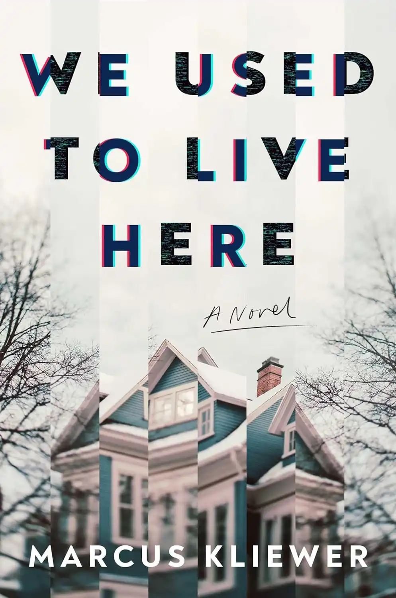

Such Sharp Teeth
Rachel Harrison

A young woman in need of a transformation finds herself in touch with the animal inside in this gripping, incisive novel from the author of Cackle and The Return.
Rory Morris isn't thrilled to be moving back to her hometown, even if it is temporary. There are bad memories there. But her twin sister, Scarlett, is pregnant, estranged from the baby's father, and needs support, so Rory returns to the place she thought she'd put in her rearview. After a night out at a bar where she runs into an old almost-flame, she hits a large animal with her car. And when she gets out to investigate, she's attacked.
Rory survives, miraculously, but life begins to look and feel different. She's unnaturally strong, with an aversion to silver--and suddenly the moon has her in its thrall. She's changing into someone else--something else, maybe even a monster. But does that mean she's putting those close to her in danger? Or is embracing the wildness inside of her the key to acceptance?
This darkly comedic love story is a brilliantly layered portrait of trauma, rage, and vulnerability.
How to Sell a Haunted House
Grady Hendrix

Grady Hendrix takes on the haunted house in a thrilling new novel that explores the way your past—and your family—can haunt you like nothing else.
When Louise finds out her parents have died, she dreads going home. She doesn’t want to leave her daughter with her ex and fly to Charleston. She doesn’t want to deal with her family home, stuffed to the rafters with the remnants of her father’s academic career and her mother’s lifelong obsession with puppets and dolls. She doesn’t want to learn how to live without the two people who knew and loved her best in the world.
Most of all, she doesn’t want to deal with her brother, Mark, who never left their hometown, gets fired from one job after another, and resents her success. Unfortunately, she’ll need his help to get the house ready for sale because it’ll take more than some new paint on the walls and clearing out a lifetime of memories to get this place on the market.
But some houses don’t want to be sold, and their home has other plans for both of them…
Relic
Douglas Preston, Lincoln Child

Just days before a massive exhibition opens at the popular New York Museum of Natural History, visitors are being savagely murdered in the museum's dark hallways and secret rooms. Autopsies indicate that the killer cannot be human...
But the museum's directors plan to go ahead with a big bash to celebrate the new exhibition, in spite of the murders.
Museum researcher Margo Green must find out who—or what—is doing the killing. But can she do it in time to stop the massacre?
What Moves the Dead
T. Kingfisher

When Alex Easton, a retired soldier, receives word that their childhood friend Madeline Usher is dying, they race to the ancestral home of the Ushers in the remote countryside of Ruravia.
What they find there is a nightmare of fungal growths and possessed wildlife, surrounding a dark, pulsing lake. Madeline sleepwalks and speaks in strange voices at night, and her brother Roderick is consumed with a mysterious malady of the nerves.
Aided by a redoubtable British mycologist and a baffled American doctor, Alex must unravel the secret of the House of Usher before it consumes them all.
The Eyes Are The Best Part
Monika Kim

Ji-won’s life tumbles into disarray in the wake of her Appa’s extramarital affair and subsequent departure. Her mother, distraught. Her younger sister, hurt and confused. Her college freshman grades, failing. Her dreams, horrifying… yet enticing.
In them, Ji-won walks through bloody rooms full of eyes. Succulent blue eyes. Salivatingly blue eyes. Eyes the same shape and shade as George’s, who is Umma’s obnoxious new boyfriend. George has already overstayed his welcome in her family’s claustrophobic apartment. He brags about his puffed-up consulting job, ogles Asian waitresses while dining out, and acts condescending toward Ji-won and her sister as if he deserves all of Umma’s fawning adoration. No, George doesn’t deserve anything from her family. Ji-won will make sure of that.
For no matter how many victims accumulate around her campus or how many people she must deceive and manipulate, Ji-won’s hunger and her rage deserve to be sated.
A brilliantly inventive, subversive novel about a young woman unraveling, Monika Kim’s The Eyes Are the Best Part is a story of a family falling apart and trying to find their way back to each other, marking a bold new voice in horror that will leave readers mesmerized and craving more.
We Used to Live Here
Marcus Kliewer

A haunting debut about two homeowners whose lives are turned upside down when the house’s previous residents unexpectedly visit.
As a young, queer couple who flip houses, Charlie and Eve can’t believe the killer deal they’ve just gotten on an old house in a picturesque neighborhood. As they’re working in the house one day, there’s a knock on the door. A man stands there with his family, claiming to have lived there years before and asking if it would be alright if he showed his kids around. People pleaser to a fault, Eve lets them in.
As soon as the strangers enter their home, inexplicable things start happening, including the family’s youngest child going missing and a ghostly presence materializing in the basement. Even more weird, the family can’t seem to take the hint that their visit should be over. And when Charlie suddenly vanishes, Eve slowly loses her grip on reality. Something is terribly wrong with the house and with the visiting family—or is Eve just imagining things?